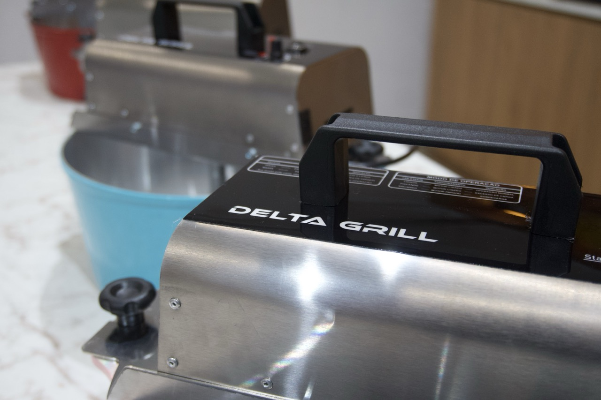

Principais recursos
- Motor: 1/3 CV
- Fase: 1
- Voltagem: 127 V e 220 V com chave seletora
- Frequência nominal: 60 Hz
- Capacidade da caçamba: 7 kg
- Sistema de segurança que interrompe o funcionamento ao abrir a tampa
Misturador em inox para açougues, supermercados, pequenas indústrias de embutidos e hamburguerias que precisam de mistura uniforme e operação segura.
